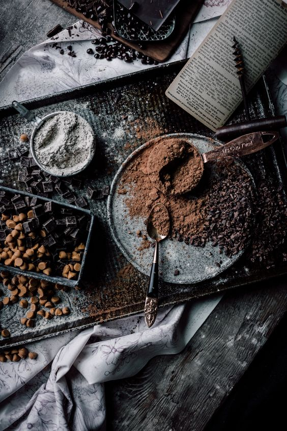
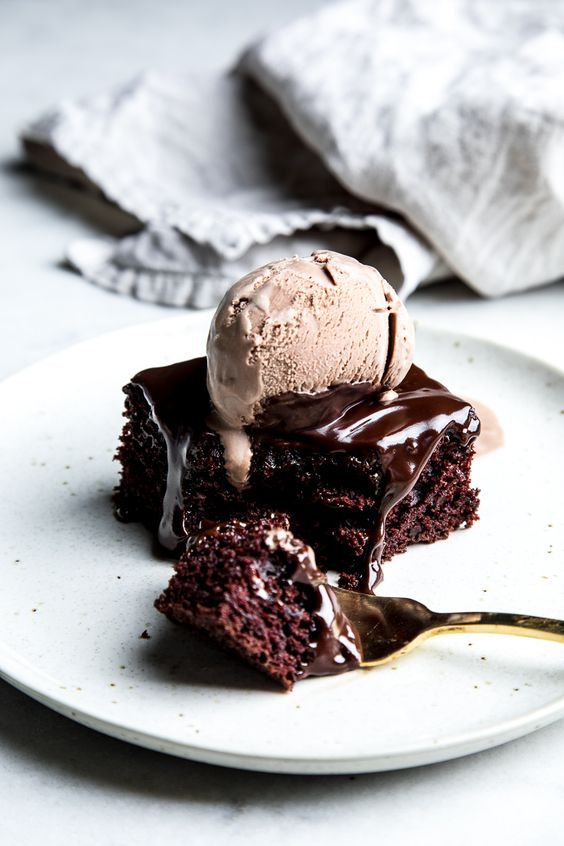
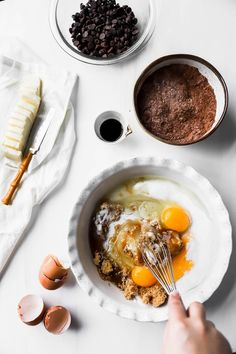
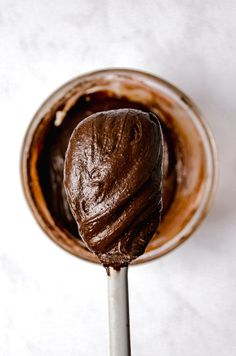

Siza's Healthy Baking Journey

Introduction
Best Homemade Brownies
The BEST brownie recipe! With crispy edges, fudgy middles, and rich chocolate flavor, these homemade
brownies will disappear in no time.
For years, I couldn’t seem to find a recipe for brownies that met my standards. Anytime I made homemade
brownies,
I wanted them to be just like the ones I ate as a kid – super fudgy, moist, and chocolaty, with crispy edges
and crackly tops.
But the thing is, these brownies didn’t come from a recipe. We always made them from a box. Nowadays,
I prefer to bake from scratch, but no brownie recipe I tried could live up to the chocolate brownies of my
childhood.

Ingredients
Baking & spices
- 1 7/8 cup All-purpose flour, unbleached
-
1/2 tsp Baking soda
- 1/2 cup Chocolate chips, vegan
- 1/4 cup Cocoa
-
180 g Dark chocolate, vegan
50 g Dark chocolate
-
7/8 cup Golden brown sugar
3/4 tsp Salt
Oils & vinegars
- 3/4 cup Coconut oil
Nuts & seeds
- 1/2 cup Walnuts
Drinks
- 2 tbsp Espresso or strong black coffee

Homemade Brownie Recipe Ingredients
Back to Siza’s recipe for brownies!
In order for it to turn out like (aka better than) the boxed mix, I use
the above mentioned ingredients.
Then, I add these key ingredients:
-
2 eggs + water – I use a bit of water with the eggs to achieve the moist, gooey texture
of
boxed mix brownies without any commercial emulsifiers.
And because this recipe doesn’t contain any baking powder, eggs are essential for helping the brownies
puff
up in the oven.
-
Powdered sugar – The trick to making homemade brownies that are just like ones from a
box!
Powdered sugar contains cornstarch,
which helps thicken the batter without the chemical additives you’d find in a mix.
-
Unsweetened cocoa powder – I recommend using Hershey’s Special Dark Dutch-processed
cocoa
powder
(I used Whole Foods’ 365 Cocoa Powder). Make sure to sift it if it’s lumpy!
-
Oil – While many recipes for brownies use unsalted butter, Siza’s calls for canola oil,
just like the boxed mix.
I use olive oil because it’s what I keep on hand, and I love the rich flavor.
- Vanilla Extract – 1/2 teaspoon vanilla really amps up the chocolate flavor
Process
First, mix together the dry and wet ingredients in two separate bowls. Combine the sugar,
flour, powdered sugar, cocoa powder, chocolate chips, and salt in a medium bowl.
Then, whisk together the eggs, olive oil, and water in a large one.
Next, combine the wet and dry ingredients. Sprinkle the dry mixture over the wet one, and
fold until just combined. The batter will be thick!
Then, pour the batter into an 8×8 inch baking pan lined with parchment paper.
Use a rubber spatula to spread it to all four sides of the pan and to smooth the top. The mixture will be
very thick – that’s ok.

Finally, bake! Transfer the pan to a 325-degree oven and bake for 40 to 45 minutes, until a toothpick
inserted comes out with a few crumbs attached. Allow the brownies to cool completely before slicing and
serving. Enjoy!
Store any leftovers in an airtight container at room temperature for up to 3 days.
They also freeze well for up to a month. Last time I made these, I doubled the recipe and stored the second
batch in the freezer.
It was so fun to have them on hand for a quick and easy dessert or afternoon treat!
Best Brownie Tips
-
Better chocolate chips = better brownies. In her book, Michelle writes that one of the biggest secrets
to making great brownies is using large, good-quality chocolate chips. She recommends Ghiradelli’s 60%
Cacao Bittersweet Baking Chips, while I love Enjoy Life’s Dark Chocolate Morsels. Either brand would
fantastic in this recipe!
-
It’s better to pull them out too early than to leave them in too long. No one likes dry brownies, so err
on the side of caution when you’re making this recipe. Bake them until a toothpick inserted comes out
with just a few crumbs attached. If you’re on the fence, go ahead and take them out of the oven. They’ll
continue to firm up as they cool!
-
Wait for them to cool. Try your best to resist eating these guys straight out of the oven. Letting them
cool makes them gooier and fudgier, and they’ll be less likely to crumble when you slice them. Plus,
they’ll have an even richer chocolate flavor. Trust me, it’s worth the wait!

Subscription Form
If you click the "Submit" button, the form-data will be sent to a page called "Thank you!".